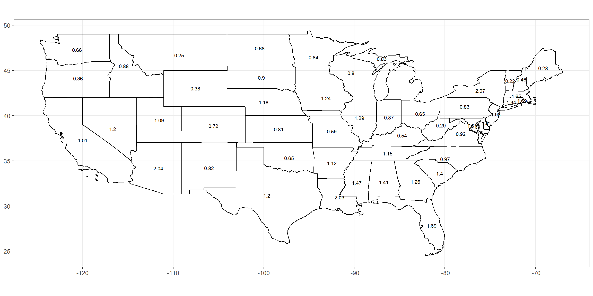

I am a Software Engineering Major. Additionally I am getting an Applied Associates in Data Science. So this project is a data science type project and will include software design and development. Some of the Data Science courses I have taken include the following: Introduction to Databases; Data Intuition and Insight; Data Wrangling, Exploration, and Visualization; Database Design & Development; Discrete Mathematics I. This project helped me strengthen the knowledge I gained from these classes, while learning new tools, techniques and technologies of Data Science.
I addressed the problem of unclear data on COVID-19. Many people see the data and can’t make sense of it and what the values mean. I also figured how much of the population has been tested. I compared the techniques used to fight COVID-19, methods may include comparing the countries’ data due to each using different methods to control the spread. My project helped people better understand COVID-19 precautions, influence and data. Each plot or data table has an impact on addressing the problem of unclear COVID-19 data. There are COVID-19 dashboards already created by multiple different companies. See Dashboards under the references section, to see what has already been created and developed.
My project wasn’t just used for my personal learning, but also to provide useful data visualizations to help people understand COVID-19 and the data. My data presentation is a great solution due to the fact of using multiple different datasets to address the problem of COVID-19 data. Using different datasets allows people to compare and contrast the datasets. It also allows for new understanding and an expansion of data and visualizations.
I found datasets that were useful for this project. I found three useful dataset hosts; they are NYTimes, Our World in Data and JHU CSSEGIS. See Dataset References under the references section, to learn about the datasets used. The data wrangling and visualization is done in R. The data analytics is presented in a github hosted website. I used Rmd with R-chunks, and YML file to organize my data. I have many plots to test the same dataset and values.
I used many R packages which include knitr, tidyverse, leaflet, sf (simple figures), dygraphs, USAboundaries, devtools, and more are used to implement the project. I also created my own R package to have functions used remotely. The package can be found on this projects github repo.
I have created multiple different data visualizations to help address the problem of people unable to understand COVID-19 data. The website that presents the data visualizations is hosted on github: https://kctolli.github.io/COVID-19/index.html. This website shows visualizations for Johns Hopkins University and New York Times data.
maps <- leaflet(data = us) %>% addTiles()
maps %>%
addPolygons(color = ~pal(cases), fillOpacity = 1, stroke = FALSE, group = "cases") %>%
addPolygons(color = ~pal(deaths),fillOpacity = 1, stroke = FALSE, group = "deaths") %>%
addPolygons(color = ~pal(per_cases), fillOpacity = 1, stroke = FALSE, group = "case %") %>%
addPolygons(color = ~pal(per_deaths), fillOpacity = 1, stroke = FALSE, group = "death %") %>%
addLayersControl(baseGroups = c("cases", "case %", "deaths", "death %"))
The visualization, I would like to highlight is found on the JHU Leaflet page and the code is displayed above. If you aren’t familiar with leaflet, it is a R package that is used to make interactive maps. I have four overlay groups which are cases, case percent, deaths, death percent. There are colors for the overall data of COVID-19 for the group you select. The colors are green and red, with green being low value and red being high value, which is set with the pal variable pal <- colorNumeric(c("green", "red"), NULL), and is implemented by the ~pal(value). The data of prop_states is found on this projects github repo.

ggplot(data = prop_state) +
geom_sf(aes(geometry = geometry), fill = NA, color = "Black") + guides(color = FALSE) +
geom_text(aes(label = (as.numeric(case_pop)*100), geometry = geometry), stat = "sf_coordinates", color = "black", size = 2.5) +
theme_bw() +
theme(axis.title.x=element_blank(), axis.title.y=element_blank())
Above is another visualization, I’m going to highlight is found on the New York Times page. The data of prop_states is found on this projects github repo. The code is also above used to create the map. The code is using the R packages sf (simple figures), USAboundaries and ggplot2 (part of the tidyverse package) to create the map.
My expected outcomes were to use data visualizations and documentation that is shown on a github website. I used have leaflets, dygraphs, ggplots and more visualizations, to describe the data. The results are be shown using Rmd files that are put through knitr to get html and Yaml files which creates the headers and javascript. This website helps people understand the data of COVID-19 using data tools such as visualizations. As people are aware and understand the data they can take appropriate actions.
Coronavirus Pandemic (COVID-19) - Statistics and Research. (2020). Retrieved 2020,
from https://ourworldindata.org/coronavirus
Mapping COVID-19. (2020). Retrieved 2020,
from https://systems.jhu.edu/research/public-health/ncov/
CSSEGISandData. (2020). CSSEGISandData/COVID-19. Retrieved 2020,
from https://github.com/CSSEGISandData/COVID-19
Nytimes. (2020). Nytimes/covid-19-data. Retrieved 2020,
from https://github.com/nytimes/covid-19-data
Owid. (2020). Owid/covid-19-data. Retrieved 2020,
from https://github.com/owid/covid-19-data
Babies - Netflix. (2020). Retrieved 2020,
from https://www.netflix.com/watch/80117834?trackId=13752289
The Fallen of World War II - Data-driven documentary about war & peace. (n.d.). Retrieved 2020,
from http://www.fallen.io/ww2/